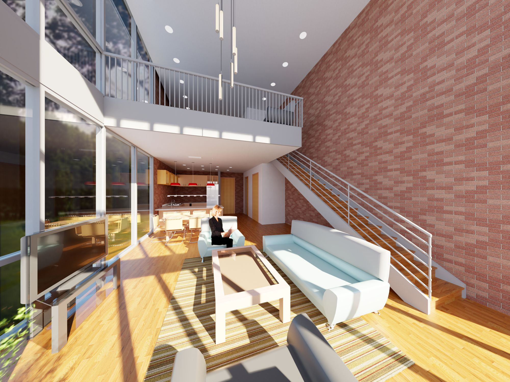
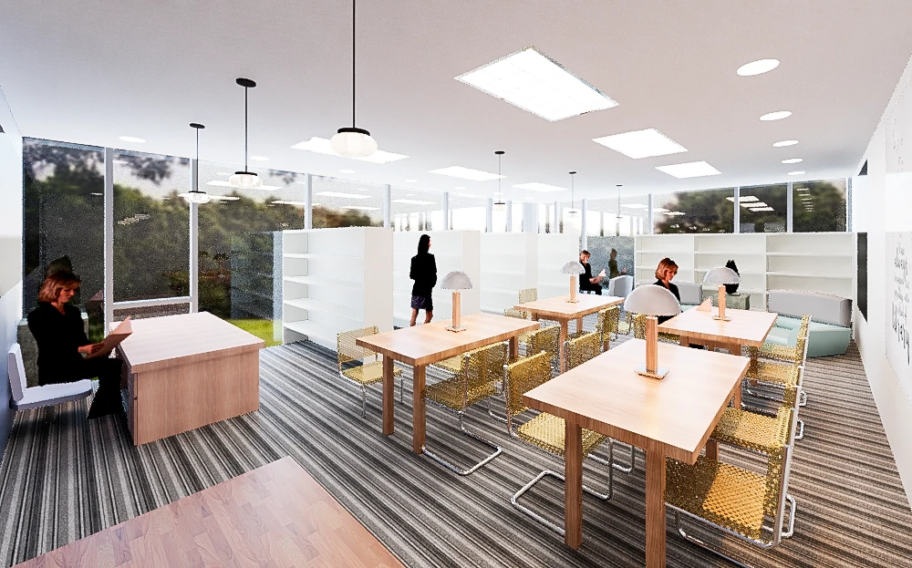
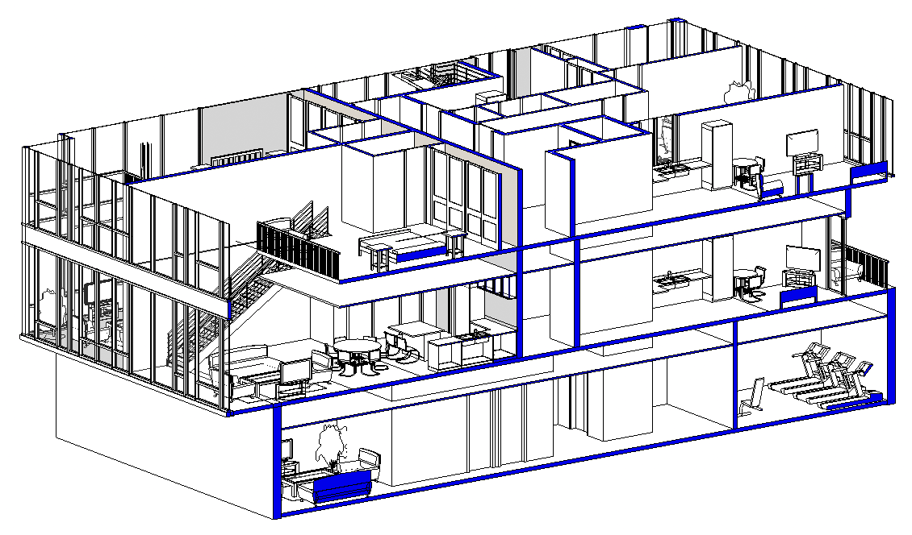

Presentation Board
The presentation sheet (A102) brings together presentation plans for all four levels, area function diagrams, interior and exterior perspectives, 3D axonometric views, and a kitchen elevation.

Multi-Level Mixed-Use Revit Documentation
Course: Revit | UC Berkeley
Role: Student Designer
Software: Autodesk Revit
Date: April 2026
Opus Elevare is a multi-level mixed-use building modeled and documented entirely in Revit. The project includes commercial, residential, and amenity spaces across four levels — ground-floor commercial and office, upper-level residential with loft living, a library lounge, and a rooftop game room with outdoor terrace.
The presentation sheet (A102) brings together presentation plans for all four levels, area function diagrams, interior and exterior perspectives, 3D axonometric views, and a kitchen elevation.
The rooftop level features an open lounge and game room with a curved wood-plank ceiling, floor-to-ceiling glazing on three sides, and direct access to an outdoor terrace. Natural light floods the space through the full-height glass walls.

The residential loft features a double-height living area with an exposed brick wall, open stair to the mezzanine, and a full-width glass curtain wall that brings the landscape into the interior. The open kitchen sits behind the living zone, connected by warm wood flooring throughout.


The open-plan living and dining area spans the full depth of the building, with a double-height ceiling, linear LED cove lighting, and a large communal dining table. The mezzanine above overlooks the space, with the stair connecting to the upper residential levels.

The Level 3 library features open study desks with task lamps, bookshelves as space dividers, pendant lighting, and floor-to-ceiling glazing bringing in natural light. Striped carpet and warm wood furniture create a focused work environment.

Revit 3D axonometric and section views showing the building's massing, spatial organization across all four levels, and the relationship between commercial, residential, and amenity zones.


The facade combines brick masonry, curtain-wall glazing, and a recessed rooftop penthouse with rooftop greenery. The front elevation reveals the double-height commercial and residential volumes behind the glass.